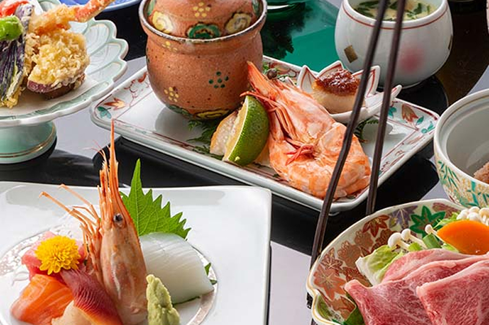

豊かな自然に育まれた旬の食材をふんだんに使用し、
料理人が一品一品丁寧に仕上げた会席料理をご用意しております。
味わいはもちろん、器や盛り付けにもこだわり、
五感で楽しんでいただけるお料理をお届けいたします。
会席料理

四季折々の食材を取り入れた、
当館自慢の会席料理をご用意しております。
熊本の豊かな自然が育てた山の幸、川の幸を中心に、
料理長が季節ごとの味わいを大切に仕上げました。
目にも美しい盛り付けとともに、
ゆったりとしたひとときをお楽しみください。
お品書き
- 先付 季節の小鉢
- 前菜 旬の味覚盛り合わせ
- 造り 本日の鮮魚三種盛り
- 焼物 季節の焼き物
- 台物 熊本県産和牛陶板焼き
- 揚物 季節の天婦羅
- 食事 釜炊き御飯 香の物
- 止椀 味噌汁
- 甘味 本日の甘味
※季節や仕入れ状況により内容が変更になる場合がございます